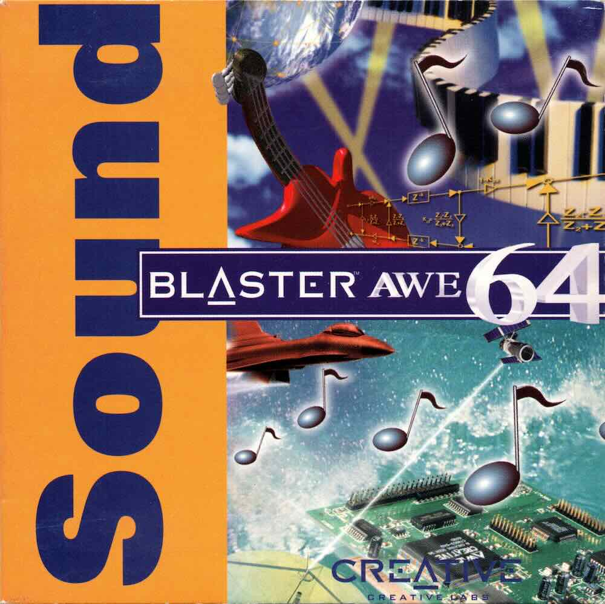

I’ve got so many soundfonts, and now I can do stuff with them in R!
Author
Matt Crump
Published
February 16, 2024
Code
from diffusers import DiffusionPipelinefrom transformers import set_seedfrom PIL import Imageimport torchimport randomimport sslimport osssl._create_default_https_context = ssl._create_unverified_context#locate library#model_id = "./stable-diffusion-v1-5"model_id ="dreamshaper-xl-turbo"pipeline = DiffusionPipeline.from_pretrained( pretrained_model_name_or_path ="../../../../bigFiles/huggingface/dreamshaper-xl-turbo/")pipeline = pipeline.to("mps")# Recommended if your computer has < 64 GB of RAMpipeline.enable_attention_slicing("max")prompt ="a synthesizer made out of water. 3d. white background. super cool."for s inrange(30):for n in [5,10]: seed = s+21 num_steps = n+1 set_seed(seed) image = pipeline(prompt,height =1024,width =1024,num_images_per_prompt =1,num_inference_steps=num_steps) image_name ="images/synth_{}_{}.jpeg" image_save = image.images[0].save(image_name.format(seed,num_steps))

Sound Blaster AWE 64
Soundfonts…wow. In some sense this format is totally new to me. I had to download some to get fluidsynth to play sounds, and that’s about all I knew about them.
After perusing soundfonts on wikipedia I learned that the awesome sounds of my childhood, from the Sound Blaster AWE32 soundcard that blew my freaking mind as a kid, was soundfonts.
Last night I downloaded a whole bunch of soundfont collections, because why not. And, then I realized that I didn’t know anything about the .sf2 format, soundfont file structure, how to quickly audition different soundfonts, etc.
So, I am on a soundfont journey.
I was very excited to learn that coolbutuseless made a package to inspect .sf2 files, called rsoundfont. I’m testing it out a bit here.
{rsoundfont} works great. The .sf2 file loads as a list. All of the .wav info is in R, and the create_sample() function makes it possible to quickly listen to a soundfont in R.
Code
library(rsoundfont)# storing all my .sf2 files here# get a list of themsound_font_list <-list.files("~/Library/Audio/Sounds/Banks")# pick one to loadsf2 <-read_sf2(paste0("~/Library/Audio/Sounds/Banks/",sound_font_list[37]))# look at stuff#View(sf2$pdta$phdr)#sf2$pdta$shdr$name#sf2$pdta$shdr# quickly loop through different soundfonts and play themfor(i in1:length(sf2$pdta$shdr$name)){ samp <-create_sample(sf2, sf2$pdta$shdr$name[i], NULL) audio::play(samp)Sys.sleep(.5)}
polyphone
Next I discovered polyphone, which is an excellent open-source soundfont editor.
Polyphone makes it incredibly easy to organize samples and turn them into .sf2 files.
TE EP-133 K.O. II
I recently picked up a TE EP-133 K.O. II and I love the sample on there. Using polyphone it didn’t take that much work to get the samples into .sf2. Which means I should be able to make some fun beat. There are a bunch of different options for organizing samples as instruments and patches, and I’m looking forward to exploring this a little bit more.
KillR BEATZ
If it is true that I possess some super inspiring samples for drums, then I should be able to make some fun beats. Let’s see:
Code
library(midiblender)library(dplyr)library(pyramidi)library(fluidsynth)all_tracks <-data.frame()# note parameters bars <-12 repeat_bars <-2 possible_time_steps <-16 note_interval <-24 note_duration <-48 track_params <-list(track_1_kick =list(possible_notes =rep(1:5, times =rep(5,2,1,1,1)), key_vector =rep(rep(c(0, 0, 0, 5, 0, 0, 0, 0, 0, 0, 10, 15), each = possible_time_steps), times = repeat_bars),possible_beats =rep(c(5, 11), times=c(7,1)),program =0,channel =1 ),track_2_snare =list(possible_notes =rep(1:5, times =rep(5,2,1,1,1)), key_vector =rep(rep(c(0, 0, 0, 5, 0, 0, 0, 0, 0, 0, 10, 15), each = possible_time_steps), times = repeat_bars),possible_beats =rep(c(1, 2, 7), times=c(4,1,1)),program =1,channel =2 ),track_3_cymb =list(possible_notes =rep(1:5, times =rep(5,2,1,1,1)), key_vector =rep(rep(c(0, 0, 0, 5, 0, 0, 0, 0, 0, 0, 10, 15), each = possible_time_steps), times = repeat_bars),possible_beats =rep(c(8, 11, 12, 16), times=c(4,1,1,1)),program =2,channel =3 ) )# loop for each trackfor(t in1:3) { compose_notes <- tibble::tibble(note_id =integer(),note =integer(),beat_on =integer(),note_on =integer(),note_off =integer() ) %>%# use euclidean rhythmrowwise() %>%add_row(beat_on =c(replicate( bars*repeat_bars,bresenham_euclidean(sample(track_params[[t]]$possible_beats, 1), possible_time_steps,start =1) )),note =sample(track_params[[t]]$possible_notes,size = possible_time_steps * (bars*repeat_bars),replace =TRUE) + track_params[[t]]$key_vector ) %>%ungroup() %>%# handle note timesmutate(note_id =1:n(),note_on = (1:n() -1) * note_interval,note_off = note_on + note_duration ) %>%filter(beat_on ==1) %>%#pivot to long tidyr::pivot_longer(c("note_on", "note_off"),names_to ="type",values_to ="time") %>%arrange(time) %>%mutate(time = time -lag(time, default =0),channel = track_params[[t]]$channel)####################### End composition ######################### add composition to a new midi df new_midi_df <-create_empty_midi_df() %>%# initializeadd_meta_track_name(name ="My track") %>%add_meta_tempo(tempo =500000) %>%add_meta_time_sig(numerator =4,denominator =4,clocks_per_click =36,notated_32nd_notes_per_beat =8 ) %>%add_program_change(program = track_params[[t]]$program,channel = track_params[[t]]$channel) %>%add_control_change(control =0, value =0) %>%# Composition added hereadd_row(i_track =rep(0, dim(compose_notes)[1]),meta =rep(FALSE, dim(compose_notes)[1]),note = compose_notes$note,type = compose_notes$type,time = compose_notes$time,channel = compose_notes$channel,velocity =sample(100L:112L,dim(compose_notes)[1],replace=T)#velocity = 64 ) %>%add_meta_end_of_track() %>%mutate(i_track = t) %>%mutate(velocity =case_when(type =="note_on"~ velocity, type =="note_off"~0))# set current track number all_tracks <-rbind(all_tracks,new_midi_df)}#write midi#Initialize new pyramidi objectnew_pyramidi_object <- pyramidi::MidiFramer$new()# update ticks per beatnew_pyramidi_object$ticks_per_beat <-96L# update object with new midi dfnew_pyramidi_object$mf$midi_frame_unnested$update_unnested_mf(all_tracks)# write to midi filenew_pyramidi_object$mf$write_file("TE-EP-133-B.mid")# playfluidsynth::midi_play(midi ="TE-EP-133-B.mid",soundfont ="~/Library/Audio/Sounds/Banks/TE-EP-133-A.sf2")#bouncefluidsynth::midi_convert(midi ="TE-EP-133-B.mid",soundfont ="~/Library/Audio/Sounds/Banks/TE-EP-133-A.sf2",output ="TE-EP-133-B.mp3")
Look out aphex twin.
Here’s a blend of those beats with mario for some more midi mangling fun.